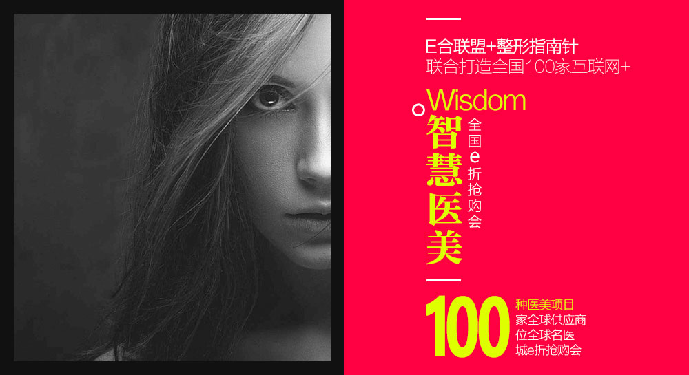

首页
关于我们
前沿发布
活动专场
专家库
医院专区
整形助手
联系我们

深层清洁，补水注氧，提亮肤色
青春解码是一项能够快速逆转皮肤衰老的皮肤类美容项目，它能将补充 给皮肤的水分电解成离子状态...
项目介绍
青春解码是一项能够快速逆转皮肤衰老的皮肤类美容项目，它能将补充给皮肤的水分电解成离子状态，并通过同极离子相斥的作用，将电解水 离子在5秒内直接导入到皮肤的基质层，让内层皮肤细胞真正补充到缺失的水分，为缺水肌肤提供了补水、输水、锁水三部青春呵护。
清春解码仪 比附美容领域的佼佼者
青春解码仪利用雷达电波的准确定位术和无线电波的聚焦术对皮肤进行分层定位,分层 聚焦,刺激皮肤细胞胶原蛋白快速新生, 修复断裂的弹力纤 维,快速消除深层皱纹,使皮肤保持紧致结实,富有弹性.焕发胶原细胞的生命力, 给皮肤充分供给营养和水,从而修复皱纹、锁住水分,改善肤质、肤色,从 根本上解决皮肤青春问题。
技术原理
利用雷达电波准确定位术和无线电波聚焦术对皮肤进行分层定位、分层聚焦，从而刺激皮肤细胞胶原蛋白快速新生，焕发胶原细胞的生命力， 给皮肤充分供给营养和水，从根本上解决皮肤干燥衰老问题。
技术特色
A：全球唯一一台针对皮肤分层聚焦、分层治疗的雷达电波技术;它不但能解决皱纹、 松弛的问题，而且还能解决肤质、肤色、肤龄的问题。 B：主动彻底激活皮肤细胞的生命活力， 刺激皮肤胶原蛋白的再生，修复受损的皮肤细胞组织; 同时通过大量的补水，使衰老的细胞恢复到 健康年轻的状态。它不仅能解决皱纹和皮肤松 弛的问题，而且能让皮肤变得光滑、细腻、白晰、水嫩，焕发青春到5-10年。
适应症
皮肤干燥，皮肤敏感需要修复，因干燥形成的假性细小皱纹，激光治疗祛斑后的干燥，吸脂减肥后皮肤的凹凸不平。